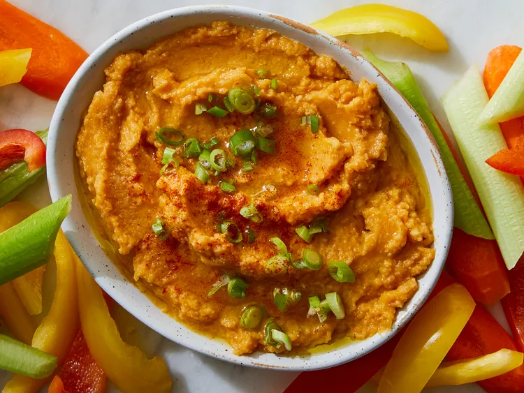

Pumpkin hummus

Description
Try adding pumpkin puree to hummus for a colorful variety of the Middle Eastern classic. Serve with pita bread and cut-up veggies such as bell pepper strips, carrots, and celery.
Ingredients
- Pumpkin
- Basil
- Garlic
- Olive oil
- Tomatoes
Steps
- Heat olive oil in a skillet over medium heat. Add garlic and cumin; cook and stir until fragrant, about 30 seconds.
- Transfer garlic mixture to a food processor or blender. Add chickpeas, pumpkin, water, lemon juice, salt, cayenne, cinnamon, and black pepper. Blend until smooth.
- Transfer into a serving bowl. Garnish with additional olive oil and sprinkle with green onions. Serve with pita bread and cut-up veggies.